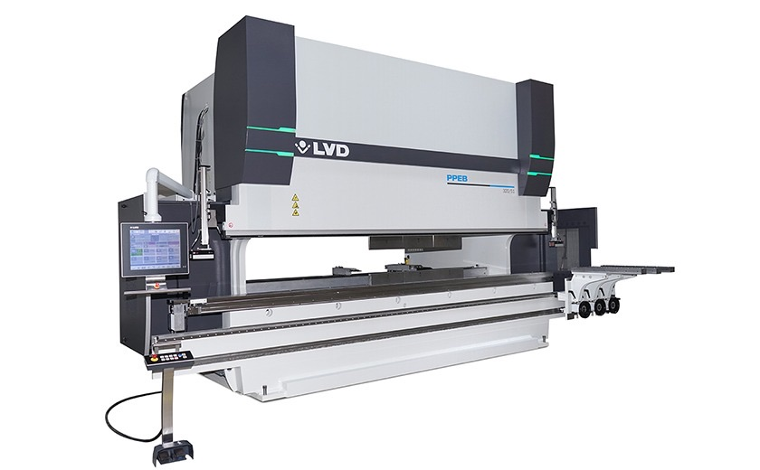

Листогибочный пресс покупают на много лет, и ошибка в выборе обходится дорого: слабый станок не согнёт нужную деталь, а слишком мощный означает переплату за оборудование, площадь и электроэнергию. Ниже порядок выбора, который помогает не ошибиться.
1. Начните с деталей, а не со станка
Составьте список деталей, которые вы будете гнуть: материал, толщина, длина гиба, высота полок, размер партии. Важны не средние значения, а крайние: самая толстая, самая длинная и самая сложная деталь. Станок должен справляться именно с ними.
2. Какое усилие нужно
Усилие (в тоннах-силах, тс) зависит от материала, толщины листа и ширины паза матрицы. Для гибки «в воздух» его можно оценить по формуле:
F = 1,42 · Rm · L · s² / V
где F — усилие, Н; Rm — предел прочности материала, Н/мм²; L — длина гиба, мм; s — толщина листа, мм; V — ширина паза матрицы, мм (в среднем около 8 толщин листа, для тонкого листа меньше, для толстого больше).
Пример
Сталь с Rm ≈ 450 Н/мм², толщина 3 мм, паз матрицы V = 24 мм, длина гиба 1 м (1000 мм):
F = 1,42 · 450 · 1000 · 3² / 24 ≈ 240 000 Н, то есть примерно 24 тс на метр длины гиба.
- Чем толще лист и чем уже паз матрицы, тем больше усилие. Толщина входит в формулу в квадрате.
- Нержавеющая сталь прочнее обычной и требует заметно большего усилия, алюминий требует меньшего.
- Закладывайте запас по усилию (на практике обычно 20–30 %), чтобы не работать на пределе.
- Формула даёт ориентир. Точные значения для конкретной матрицы и материала указаны в таблицах усилий производителя станка.
3. Длина стола и длина гиба
Длина станка должна быть не меньше самой длинной детали с небольшим запасом. Усилие считают на всю длину гиба, поэтому для длинных деталей тоннаж растёт: деталь длиной 2,5 м из того же листа потребует примерно в 2,5 раза больше усилия, чем деталь длиной 1 м.
Если почти все детали короткие, а одна-две длинные, сравните стоимость более длинного станка со стоимостью гибки таких деталей на стороне. У длинных столов важна компенсация прогиба: она помогает держать одинаковый угол по всей длине детали. Уточните, как она реализована в выбранной модели.
4. Глубина горла, ход и просвет
Если вы гнёте короба и детали с высокими полками, проверьте глубину горла (расстояние от оси гиба до рамы), ход ползуна и просвет между столом и ползуном. Недостаточный ход не позволит согнуть глубокий профиль или установить высокий инструмент.
Уточните у производителя, можно ли подобрать ход, расстояние между столом и пуансоном и высоту держателя инструмента под ваши детали: для коробов это часто решающие параметры.
5. Задний упор
Задний упор позиционирует лист. Чем больше у него управляемых осей, тем сложнее детали можно делать без ручной перенастройки. Ось X задаёт глубину, ось R высоту пальцев, а оси Z1 и Z2 перемещают пальцы вдоль стола, что нужно для деталей сложной формы. Для серийных деталей с несколькими гибами число осей прямо влияет на скорость работы.
6. Система ЧПУ и программирование
Спросите, можно ли программировать прямо на станке, рассчитывает ли система развёртку и порядок гибов, есть ли библиотека инструмента и симуляция, чтобы заранее увидеть, не заденет ли деталь инструмент. Для точных деталей полезна угловая измерительная система: она измеряет угол в процессе гибки и позволяет корректировать его. У LVD такую задачу решает система Easy-Form Laser: она контролирует угол во время гибки и помогает компенсировать пружинение материала.
7. Инструмент
Пуансоны и матрицы это отдельная статья расходов. Заранее уточните тип крепления инструмента: от него зависит, какой инструмент вы сможете докупать. Для специальных операций нужен специальный инструмент, например для плющения кромки (замка). Если вы часто меняете инструмент, обратите внимание на решения с автоматической сменой, такие как LVD ToolCell.
8. Безопасность, сервис и площадка
- Защитные устройства: ограждения и световые барьеры.
- Сервис в вашей стране: пусконаладка, обучение персонала, запасные части, гарантийный и постгарантийный ремонт (подробнее о нашем сервисе).
- Площадка: размеры станка, высота потолка цеха, фундамент, электропитание.
Частые ошибки при выборе
- Берут усилие «впритык» по самой толстой детали, а потом не могут гнуть нержавеющую сталь.
- Не учитывают стоимость инструмента и оснастки.
- Не проверяют, пройдёт ли станок на площадку и хватит ли электропитания.
- Сравнивают станки только по цене, забывая о сервисе и сроках поставки запчастей.
- Покупают лишнюю автоматизацию при малых партиях, либо экономят на осях упора при серийной работе.
Что подготовить, чтобы мы подобрали станок
- Чертежи или эскизы типовых деталей.
- Материал и толщины, максимальная длина гиба.
- Объём гибки в смену или в месяц.
- Пожелания по автоматизации и размеры площадки.
Напишите нам, и мы подберём вариант под вашу задачу. Листогибочные прессы LVD описаны на странице «Листогибочные прессы».
Расчёты и значения в статье ориентировочные. Точные параметры уточняйте у производителя конкретной модели.